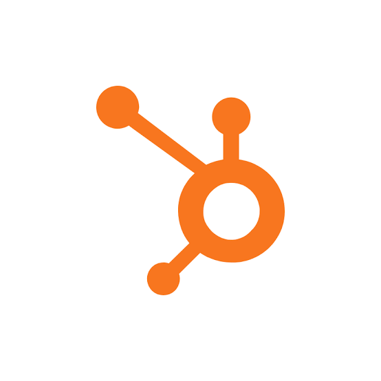

hey, i'm chelsea 💫
i study biomedical engineering and computer science at johns hopkins. i'm excited about creating things that make people's lives easier, especially through product engineering and machine learning for biology and scientific discovery.
i'm also interested in community building, cybersecurity, art and design, educating young people, assistive tech, and xr. i've had fun with hackathons, competitive programming, and cybersecurity competitions, and have been lucky to earn some national recognition along the way.
outside of school, i like exploring new places, figure skating, listening to music, trying new recipes, and big backing on beli.
employment
where i've worked
member of technical staff intern · openai
worked on chatgpt growth and built chatgpt translate from an early prototype into a multimodal product, including live conversations, speech, files, and camera input.

summer 2025software engineer intern · hubspot
built product workflows for pipeline cloning, added end-to-end coverage, and instrumented customer usage.
software engineer intern · chapter one
built browser-based ai agents and automations to help small businesses with customer outreach.
outside of work
non-employment things
on campus
- co-directed hophacks, hopkins's student-run hackathon.
- compete with jhu's acm-icpc team and represented hopkins at the icpc north america championship.
- work on machine learning for biology using spatial omics with the chitra lab.
- formerly involved with the bme medical device design team, wics, and volunteer medical engineering; also organized greenhacks.
- volunteered as an ice skating instructor during spring semesters.
off campus & before college
- i used to lead design and marketing with hackcanada and ghsen.
- in high school, led my school's website and app team, project metropolis.
- was president of math club and calligraphy club, vice president of cs club, a problem setter for my cybersecurity club, and senior designer on the yearbook team.
- organized x series ctf (1,500+ teams) and helped with problem setting, outreach, and marketing.
- also helped organize hackathons, including hackcanada and ignitionhacks.
- used to teach programming, french, and ice skating across various nonprofit organizations.
awards & contests
a few things i'm proud of
- ✿icpc north america championship qualifiertop 50 in north america; silver medal, 5th/111 at mid-atlantic regionals · 2025-26
- ✿ccc + egoi team canada campccc top 5% of 8,100; #3 in canada among women · 2x camp invitee
- ✿cyberpatriot · 1st in canada16th of 5,200+ teams internationally; top 0.28% · 2024
- ✿11 hackathon winsincluding hackmit, jamhacks, and hack the north
⌘ competitive programming icpc, ccc & egoi
- 2026 — icpc north america championship qualifier; top 50 teams in north america, selected from 3,500+ participants.
- 2025 — icpc mid-atlantic regionals: silver medal, 5th/111, division i [jhu 1].
- 2024 — icpc mid-atlantic regionals: top 20% [jhu 2].
- 2024 — canadian computing competition senior: distinction, top 6%.
- 2023 — european girls' olympiad in informatics: team canada camp invitee, top ~15 female nationally; team was cancelled that year.
- 2023 — canadian computing competition senior: distinction, top 8%.
- 2022 — european girls' olympiad in informatics: team canada camp invitee, #3 female nationally.
- 2022 — canadian computing competition senior: honor roll, top 5%.
- 2022 — calico: #6/~250.
- competed in 30+ contests. i love advent of code.
⌁ cybersecurity cyberpatriot, uscc & ctf
- 2024 — cis us cyber challenge fall cyber quest: #16/3,500+ (top 0.5%), individual; uscc cyber camp invitee.
- 2024 — cyberpatriot xvi: #1 in canada, #16/5,285 internationally (top 0.3%); cisco, platinum, and cyberTitan invitee.
- 2023 — cyberpatriot xv: #2 in canada, #15/5,266 internationally (top 0.3%); cisco, platinum, and cyberTitan invitee.
- 2022 — ctftime: 8th overall ctf team in canada by cumulative points, competing against collegiate teams as a high school team.
- 2022 — cyberpatriot xiv: #4 in canada, #40/5,266 internationally (top 0.8%); platinum and cisco.
- competed in 40+ capture the flag contests, many ranking in the top 10%.
✿ hackathons 11 wins · 20 attended · 5 organized
- 2024 — hackmit: terra api prize, 3rd [justim beaver].
- 2024 — ai policy: top 5 overall [sue-per gpt].
- 2024 — jamhacks 8: 2nd overall + best use of adobe express add-on [signematic].
- 2023 — hack the north: best use of taipy [cleancue, made with raspberry pi, python, opencv, and cohere].
- 2023 — jamhacks 7: best use of mongodb atlas [physioquest, made with django and opencv].
- 2023 — toronto science fair: bronze award [pharmabase, made with react].
- 2023 — fbla cnlc: national finalist, 8th nationally for coding and programming [pengage, made with django].
- 2023 — holiday game jam ii: “i would buy this off steam” [santa claws, made with unity].
- 2022 — lyonhacks ii: 1st overall [medibase, made with react].
- 2022 — holiday game jam i: most user friendly game [bunbun's adventure, made with godot].
- 2021 — the superpositron: qoom best web app challenge [satsuma].
- 2021 — lyonhacks i: first place [modora].
- attended 20 hackathons, including treehacks at stanford and the ai hackathon at uc berkeley. fbla and the science fair snuck onto this list too.
♡ misc awards trading, research, art & more
- 2026 — uchicago trading competition: 3rd, market making case.
- 2025 — bloomberg distinguished professors summer undergraduate research award: $6,000, salzberg lab at jhu (computational biology); declined.
- 2025 — ingenious+ innovation award: regional winner ($1,000), presented by the governor of ontario.
- 2024 — ncwit canadian aspirations in computing award winner.
- 2024 — friesens yearbook cover design contest: 3rd among 200+ covers across north america.
- 2024 — graduation awards: ontario scholar and innovation award; ap scholar with distinction.
- 2023 — new york times 6th annual podcast contest: international finalist, top 20/1,100+; featured in the new york times.
- 2023 — keas korean credit program: photo essay winner and poster design winner.
- 2019 — ikea soft toy drawing competition: national finalist. my design almost became an ikea plush; i got free ice cream, art supplies, and a blåhaj, so i'm calling it a win. 🦈
∑ math contests more from high school
- 2023 — canadian senior mathematics contest: distinction, top 9%.
- 2023 — canadian girls' math challenge senior: 2nd overall.
- 2023 — fermat (cemc): distinction, top 15%.
- 2022 — hypatia (cemc): distinction.
- 2022 — sir isaac newton physics contest (uw): distinction.
- 2022 — canadian senior mathematics contest: distinction, top 12%.
skills
skills & tools
languages
tools & technologies
areas
find me around the internet